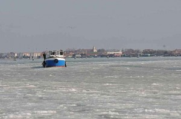
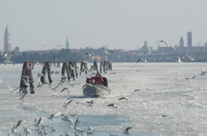
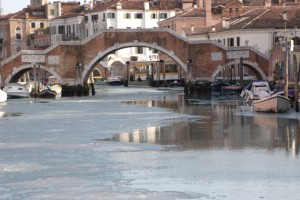

If you followed the news recently, you have certainly learned that Italy has experienced an unusual cold weather lately, that has literally paralyzed half of the country (and sadly caused many victims). Venice hasn't been spared, but seeing this beautiful city floating in a sea of ice is something that I have never seen before, which is why I want to share it with you. Enjoy!



Photo credits:
giornalettismo.com